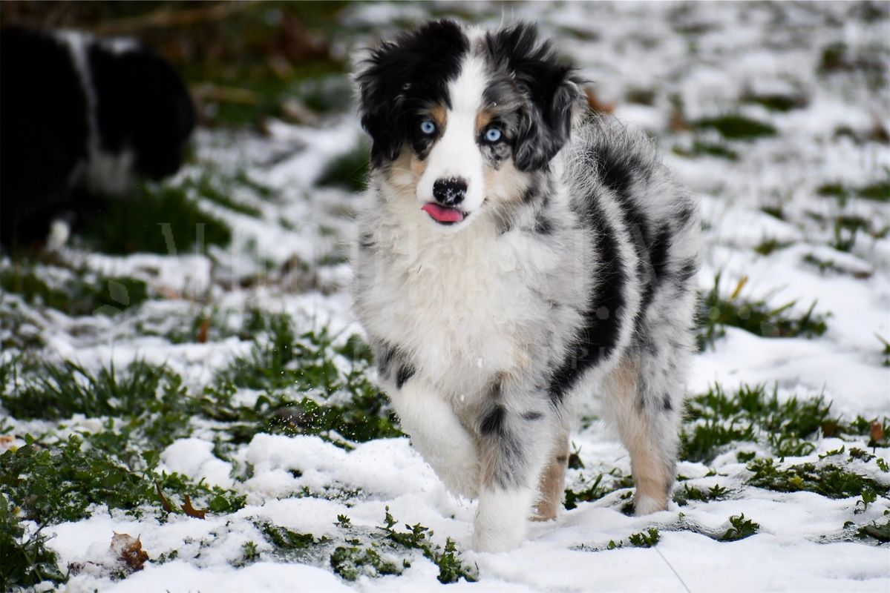

These are our Miniature Australian Shepherds. We have a male, Nova, and two females, Timber and Kya. We breed these beautiful dogs and get many different colors. These dogs are our lives and we love to see how happy others are when they get one of these beautiful puppies.
-Nova-
-Timber-


-Kya-


The colors/patterns that we get with these dogs are: